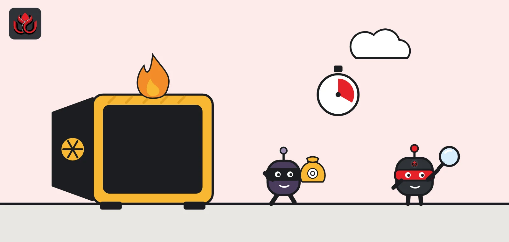
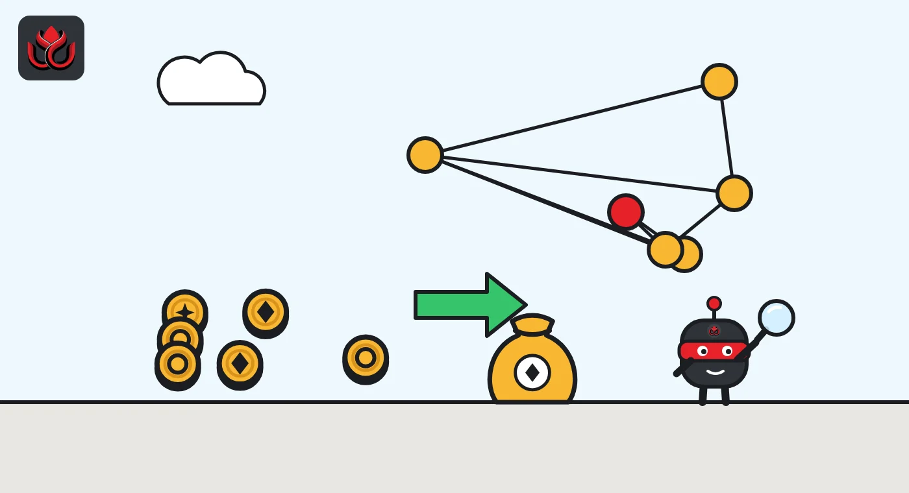

Duelbits lost $7 million from its hot wallets. Five weeks later, still no explanation
The crypto casino went offline on September 24, said user funds were safe and has since relaunched. On-chain data show the stolen value was swapped into ETH, which can't be frozen, and moved on.

Key points
- Duelbits co-founder Joe confirmed a hack of about $7 million on September 24, 2026, took the site offline and said user funds are safe.
- Etherscan shows the Duelbits hot wallet sent out about 593,430 USDT, 96,805 USDC, 31,515 DAI and 12.39 billion SHIB in one burst.
- An address that gathered the proceeds as ETH has sent out about 2,264 ETH and is now almost empty. Duelbits has published no postmortem.
A $7 million hack and a site offline
Crypto casino Duelbits lost about $7 million from its hot wallets on September 24, 2026, its co-founder Joe, who posts as @DuelbitsJoe, confirmed on X. He said the team was still working out how it happened, and that the site would stay offline until it had clarity. He also wrote, "User funds are safe."
His plan had three steps: finish the investigation, refill the hot wallets and bring the site back as "Duelbits 2.0." A hot wallet is an online wallet a platform keeps topped up so it can pay out withdrawals quickly. Because it must stay connected, its private key is a constant target.
Duelbits has not said how the attacker got access, or how much was taken on each blockchain.
Where the money went
Public blockchain data fill in part of the picture. On Ethereum, the address Etherscan labels as the Duelbits hot wallet sent out about 593,430 USDT, 96,805 USDC, 12.39 billion SHIB and 31,515 DAI in a few consecutive blocks about 38 days before November 2, which matches September 24. All four transfers went to the same receiving address.
ETH then flowed into an address that first became active the same week, including 38.01 ETH sent from that same receiving address, Etherscan shows. That swap matters: Tether and Circle can freeze USDT and USDC, but no company can freeze ETH.
That ETH has not stayed put. Etherscan shows the address sent 601 ETH, 650 ETH and 1 ETH to another wallet in late September, then 1,011.55 ETH to a different wallet in mid-October. As of November 2, 2026, it held almost nothing. Each hop makes the money harder to trace and recover.
The labeled Duelbits hot wallet itself now holds only small amounts, mostly unsolicited tokens sent to it after the attack, Etherscan shows.

Why hot wallets keep getting drained
Stolen hot wallet keys are one of the most common ways crypto platforms lose money. A casino or exchange needs to pay winners and withdrawals within minutes, so some funds must sit in a wallet whose key is held on internet-connected systems. Cold wallets, kept offline, are safer but slow to use.
Platforms try to limit the damage by keeping only a small share of funds hot and refilling it often. That appears to be what the co-founder meant by refilling the hot wallets. It also explains how a platform can lose millions and still say user balances are covered: the loss falls on the company's operating funds, as long as its reserves are larger.
Duelbits has not published its reserve figures, so that claim cannot be checked on-chain from the outside.
Stablecoins taken from the Ethereum wallet
Stablecoins that left the labeled Duelbits hot wallet on Ethereum during the attack, in dollars. ETH, SHIB and other chains are not included, so this is only part of the roughly $7 million confirmed.
Stablecoins drained from the Duelbits Ethereum hot wallet
US$ thousand
Source: Etherscan, Duelbits hot wallet token transfers. Stablecoins counted at about $1 each.
Back online, questions open
Duelbits is operating again. On October 23 its official X account pinned a post promoting a new version of the site. The account has since returned to its usual game promotions.
Several questions are still open. Duelbits has not said how the key was exposed, whether player deposits sat in the drained wallets, or how much was lost outside Ethereum. It has also not said whether it asked exchanges to flag the attacker's addresses, or whether law enforcement is involved.
Players should watch for fake refund or claim links, which often follow incidents like this, and use only Duelbits' official channels.
Timeline
Duelbits hot wallet drained; co-founder confirms a hack of about $7 million and takes the site offline
Attacker's ETH address sends about 1,252 ETH onward
Same address sends 1,011.55 ETH to another wallet
Duelbits promotes a new version of its site on X
LC Insight analysis
This section is our reading of the facts above, not a statement of fact.
- We think the missing postmortem is now the main story. Five weeks after a $7 million loss and a relaunch, players still do not know how the key leaked or what has changed.
- The fast swap into ETH shows why stablecoin freezes rarely save hot wallet victims. Issuers can only act if alerts reach them before the swap, which argues for faster automated reporting across the industry.
- "User funds are safe" is a claim players can't check. Publishing reserve addresses and a clear incident report would turn it into one they can.
What's next
- A Duelbits postmortem on how the key was exposed
- Where the ETH sent out in late September and October goes next
- Any confirmation on whether player deposits were affected
Disclaimer. This article is based on public information and the sources listed below as of the update time shown. It is for information only and is not investment, legal or tax advice. Figures may change as companies and authorities publish new data.